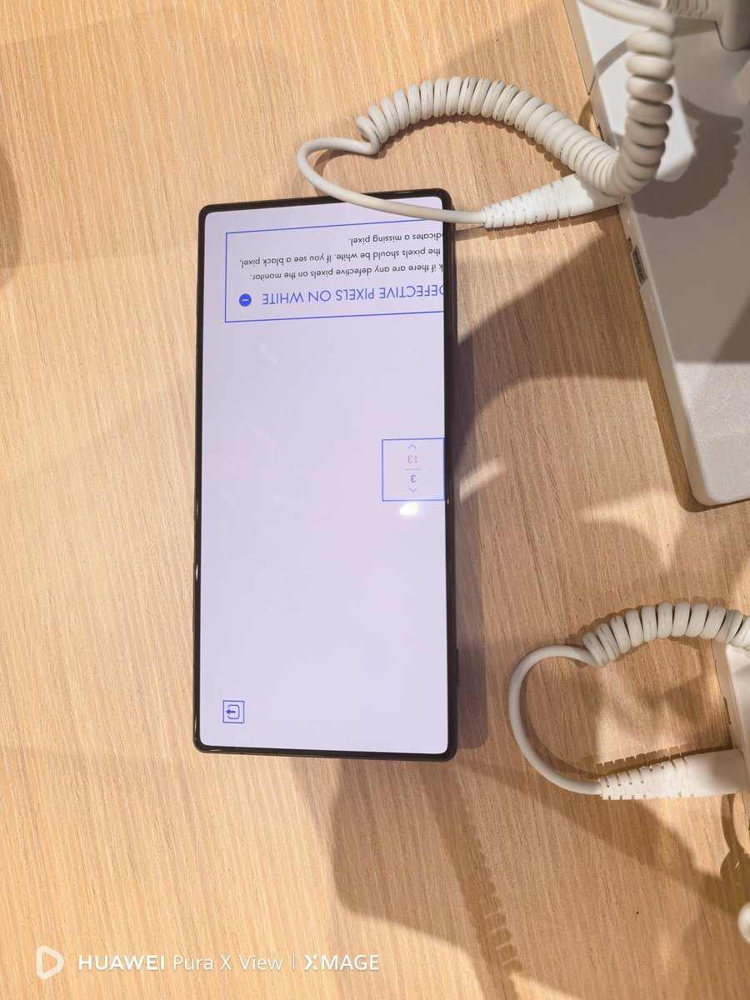
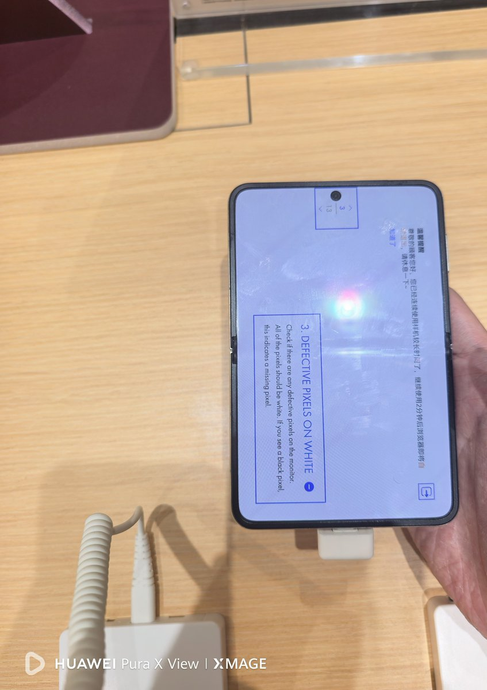
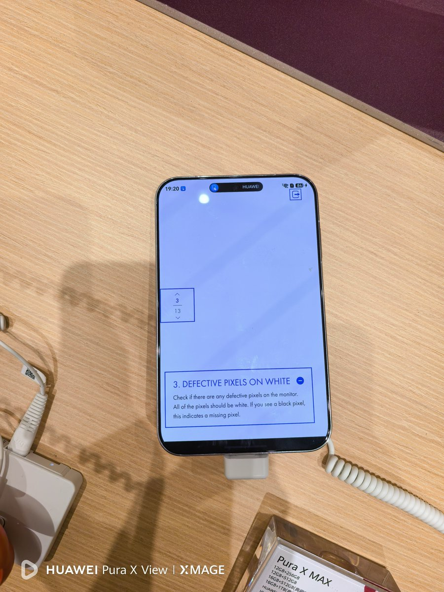

cjydfb
@fcjdfb
今天去线下比对了一下折叠屏，还是想说这个问题。受限于折叠形态所需的柔性多层膜堆叠与力学妥协，会导致显示效果大幅衰减，图一是我主力直板机在白色下的显示效果，图二是purax。图三是拍摄设备（直板机），微观平面的出光法线偏转会导致光线经过折射无法均匀扩散，破坏了纯白背景像纸张一样的洁净感，就会呈现出这种无法消除的轻微颗粒感与脏屏。受限于拍摄设备问题以及我没做手动色温，实际肯定是有区别的。临时拍的几张


